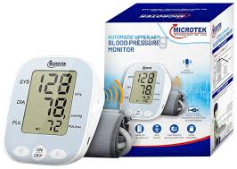
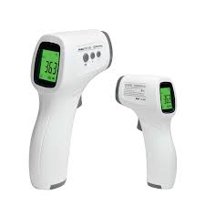
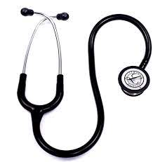
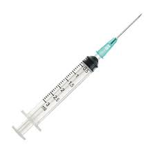
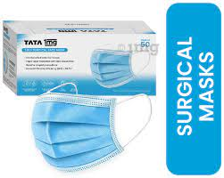
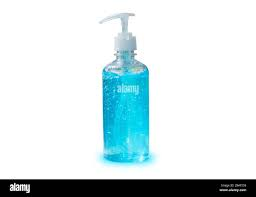

>
Home
Register
Shop
News
Medical Data
Search Doctor
shop

Blood Pressure Monitor
₹ 1899.00/-
Blood pressure is measured using a sphygmomanometer, or blood pressure monitor.
It consists of an inflatable cuff that's wrapped around your arm, roughly level with your
heart, and a monitoring device that measures the cuff's pressure. The monitor measures two
pressures: systolic, and diastolic
Quantity
Buy
Add to Cart

Thermometer
₹ 100.00/-
A thermometer is an instrument that measures temperature. It can measure the temperature of a solid
such as food, a liquid such as water, or a gas such as air.
Quantity
Buy
Add to Cart

Stethoscope
₹ 1500.00/-
The stethoscope is a medical device for auscultation, or listening to internal sounds of an animal or human body.,
It typically has a small disc-shaped resonator that is placed against the skin, with either one or two tubes connected to two earpieces.
Quantity
Buy
Add to Cart

Syringe
₹ 780.00/-
A syringe is a small tube with a thin hollow needle at the end.
Syringes are used for putting liquids into things and for taking liquids out
Quantity
Buy
Add to Cart

Surgical Mask
₹ 200/-
A surgical mask is a personal protective equipment used by healthcare professionals
that serves as a mechanical barrier that interferes with direct airflow in and out of respiratory orifices
Quantity
Buy
Add to Cart

Sanitizer
₹ 250.00/-
Hand sanitizer is a liquid, gel or foam generally used to kill many viruses/bacteria/microorganisms on the hands.
Quantity
Buy
Add to Cart